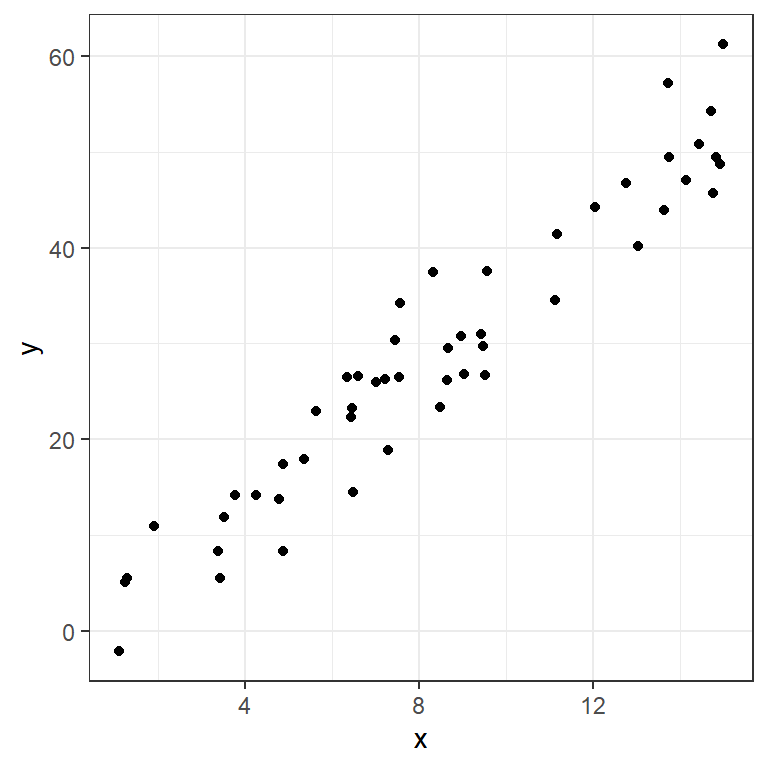
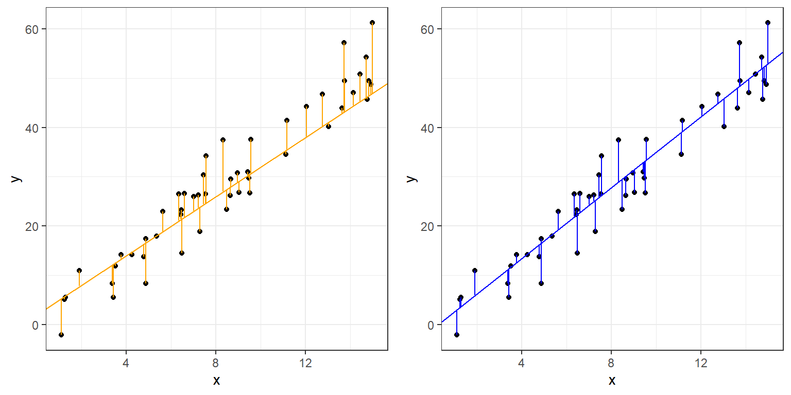

#install.packages("gridExtra")
library(gridExtra) #combining and organizing multiple ggplotsbeginR: Models
Data and other downloads
None.
Today
This workshop aims to introduce some basic intuition about modelling in R.
Note: we are referring you to the first edition of R4DS here because the second edition dropped the chapters on modeling. The second edition refers readers to the Tidy Modeling with R, which is the Tidyverse framework for predictive modeling, but we feel it is better to start with the material from the first edition.
Set up Your Project
library(tidyverse)Don’t forget to:
- Create a new project in R
- Create a data folder inside your project folder
- Download the dataset (inspections10k.csv) to your data folder
- Load the tidyverse
Terminology
What is a model?
A model is another tool to summarize the information in a dataset. This often comes in the form of approximations that make it easier to interpret and generalize relationships to new data. Ideally a model represents the “signal” in the data while ignoring unimportant or ungeneralizable “noise.”
For today we’ll mainly consider “supervised models”. A supervised model aims to predict some target variable(s) and requires that we have observed these variables alongside the factors we want to use to predict it. This target variable is sometimes called a “dependent” or “response” variable. Today’s lesson will focus on a specific form of supervised model, the linear model, also known as ordinary least squares regression (OLS) or the general linear model (not to be confused with generalized linear models).
Unsupervised models don’t distinguish between response and predictor variables and instead look for patterns among variables more generally. Clustering is one of the most commonly used unsupervised learning methods. We will not be covering unsupervised models today.
Simple Linear Models with Plots
For these plots, we’ll use moddf provided via the code below. The url function combined with read_csv allows us to directly import content from the internet into our R session.
We’ll look at the code to generate moddf at the end of this section.
moddf <- read_csv(url("https://unc-libraries-data.github.io/beginR/week10_models/moddf.csv"))
head(moddf)# A tibble: 6 × 2
x y
<dbl> <dbl>
1 11.2 41.4
2 13.7 49.5
3 14.9 48.7
4 14.1 47.1
5 7.29 18.8
6 4.25 14.2Since these are both continuous numeric variables, let’s plot them with a scatterplot.
ggplot(data=moddf,aes(x=x,y=y))+geom_point()+theme_bw()
One of the simplest ways to model data like this is with a line capturing the trend. We can model a line with an interpretable formula:
\[y= intercept + slope * x\]
Given a new x value, we could predict the corresponding y by plugging it into this equation. We can also get observations for the x values we have observed.
We can plot some candidate line(s) with geom_abline:
ggplot(data=moddf,aes(x=x,y=y))+geom_point()+
geom_abline(intercept=-1,slope=3.6,color="blue")+
geom_abline(intercept=2,slope=3,color="orange")+
theme_bw()How do we choose between lines? A common metric, especially in prediction, involves measuring our misses with residuals:
residual = actual value - prediction
These can be graphically represented as lines parallel to the y-axis:
moddf$p1 <- -1 + 3.6 * moddf$x
moddf$p2 <- 2 + 3 * moddf$x
plot1 <- ggplot(data=moddf,aes(x=x,y=y))+geom_point()+
geom_abline(intercept=2,slope=3,color="orange")+
geom_segment(aes(x = x, y = y,
xend = x, yend = p2),color="orange")+
theme_bw()
plot2 <- ggplot(data=moddf,aes(x=x,y=y))+geom_point()+
geom_abline(intercept=-1,slope=3.6,color="blue")+
geom_segment(aes(x = x, y = y,
xend = x, yend = p1),color="blue")+
theme_bw()
grid.arrange(plot1,plot2,ncol=2)
Ordinary Least Squares (OLS), often referred to simply as “Linear Regression”, finds the line that minimizes the sum of the squared residuals above.
We can fit an OLS with lm in R, and get a standard statistical summary with summary.
fit <- lm(y ~ x, data = moddf)
summary(fit)
Call:
lm(formula = y ~ x, data = moddf)
Residuals:
Min 1Q Median 3Q Max
-7.8708 -3.5818 0.3781 2.2938 9.2515
Coefficients:
Estimate Std. Error t value Pr(>|t|)
(Intercept) -1.3372 1.4409 -0.928 0.358
x 3.5962 0.1545 23.280 <2e-16 ***
---
Signif. codes: 0 '***' 0.001 '**' 0.01 '*' 0.05 '.' 0.1 ' ' 1
Residual standard error: 4.439 on 48 degrees of freedom
Multiple R-squared: 0.9186, Adjusted R-squared: 0.9169
F-statistic: 541.9 on 1 and 48 DF, p-value: < 2.2e-16The arguments given to lm are:
Formula:
y~xR uses
~in place of the equals sign in formulasR automatically includes an intercept term
This formula is therefore equivalent to:
\[y=intercept + slope * x\]
- Data:
- The dataframe containing the variables of interest.
The values listed under Estimate provide estimates for the intercept,-1.3371543, and slope,3.5962276.
moddf$lm <- predict(fit)
ggplot(data=moddf, aes(x=x, y=y)) +
geom_point(color="black") +
geom_abline(intercept=fit$coefficients[1],slope=fit$coefficients[2],size=1.1,alpha=0.8,color="black") +
geom_abline(intercept=2,slope=3,color="orange")+
geom_abline(intercept=-1,slope=3.6,color="blue")+
geom_segment(aes(x = x, y = y,
xend = x, yend = lm)) +
theme_bw()Warning: Using `size` aesthetic for lines was deprecated in ggplot2 3.4.0.
ℹ Please use `linewidth` instead.We can visualize the OLS model’s point estimates and confidence bands like this:
moddf.predict <- cbind(moddf, predict(fit, interval = 'confidence'))
ggplot(moddf.predict, aes(x, y)) +
geom_point() +
geom_line(aes(x, lm)) +
geom_ribbon(aes(ymin=lwr,ymax=upr), alpha=0.3)
Finally, here’s the code used to generate our dataset:
x <- runif(50,0,15)
y <- 3.4 * x + rnorm(50,0,5)
moddf <- data.frame(x,y)The “true” values, obscured by random noise, were:
- intercept = 0
- slope = 3.4
The OLS did a pretty good job determining these numbers. We’ll return to this idea of generating data in a bit.
Multiple Regression - Formula notation in R
OLS can be extended to include multiple predictors. Let’s experiment with the built-in mtcars dataset.
data(mtcars)
str(mtcars)'data.frame': 32 obs. of 11 variables:
$ mpg : num 21 21 22.8 21.4 18.7 18.1 14.3 24.4 22.8 19.2 ...
$ cyl : num 6 6 4 6 8 6 8 4 4 6 ...
$ disp: num 160 160 108 258 360 ...
$ hp : num 110 110 93 110 175 105 245 62 95 123 ...
$ drat: num 3.9 3.9 3.85 3.08 3.15 2.76 3.21 3.69 3.92 3.92 ...
$ wt : num 2.62 2.88 2.32 3.21 3.44 ...
$ qsec: num 16.5 17 18.6 19.4 17 ...
$ vs : num 0 0 1 1 0 1 0 1 1 1 ...
$ am : num 1 1 1 0 0 0 0 0 0 0 ...
$ gear: num 4 4 4 3 3 3 3 4 4 4 ...
$ carb: num 4 4 1 1 2 1 4 2 2 4 ...We add more variables with extentions to R’s formula notation:
| Symbol | Role | Example | Equivalent |
|---|---|---|---|
+ |
Add variable | mpg~vs+disp |
\[mpg = intercept + \beta_1 vs + \beta_2 disp\] |
* |
Interactions | mpg~vs*disp |
\[mpg = intercept + \beta_1 vs + \beta_2 disp + \beta_3 vs*disp\] |
. |
Include all variables in dataframe | mpg~. |
\[mpg = intercept + \beta_1 cyl + \beta_2 disp + ... + \beta_{10} carb\] |
- |
Exclude variable | mpg~.-disp-hp |
\[mpg = intercept + \beta_1 cyl + \beta_2 drat + ... + \beta_{8} carb\] |
Examples:
summary(lm(data=mtcars,mpg~vs+disp))
Call:
lm(formula = mpg ~ vs + disp, data = mtcars)
Residuals:
Min 1Q Median 3Q Max
-5.4605 -2.0260 -0.6467 1.7285 7.0790
Coefficients:
Estimate Std. Error t value Pr(>|t|)
(Intercept) 27.949282 2.201166 12.697 2.27e-13 ***
vs 1.495004 1.651290 0.905 0.373
disp -0.036896 0.006715 -5.494 6.43e-06 ***
---
Signif. codes: 0 '***' 0.001 '**' 0.01 '*' 0.05 '.' 0.1 ' ' 1
Residual standard error: 3.261 on 29 degrees of freedom
Multiple R-squared: 0.7261, Adjusted R-squared: 0.7072
F-statistic: 38.44 on 2 and 29 DF, p-value: 7.005e-09We can use some familiar tidyverse tool to visualize this fit:
d <- mtcars |> select(mpg, vs, disp)
fit2 <- lm(mpg ~ vs + disp, data = d)
d$predicted <- predict(fit2)
d$residuals <- residuals(fit2)
d |>
pivot_longer(-c(mpg,predicted,residuals),names_to = "iv", values_to="x") |>
ggplot(aes(x = x, y = mpg)) +
geom_point(aes(y = predicted), shape = 1) +
facet_grid(~ iv, scales = "free") +
theme_bw()
What does -1 do below?
summary(lm(data=mtcars,mpg~vs*hp+disp-1))
Call:
lm(formula = mpg ~ vs * hp + disp - 1, data = mtcars)
Residuals:
Min 1Q Median 3Q Max
-10.4960 -3.2474 -0.3531 4.3101 19.0605
Coefficients:
Estimate Std. Error t value Pr(>|t|)
vs 38.9990553 7.2131470 5.407 9.13e-06 ***
hp 0.0757879 0.0261494 2.898 0.00721 **
disp 0.0003558 0.0159033 0.022 0.98231
vs:hp -0.2343856 0.0769152 -3.047 0.00500 **
---
Signif. codes: 0 '***' 0.001 '**' 0.01 '*' 0.05 '.' 0.1 ' ' 1
Residual standard error: 6.733 on 28 degrees of freedom
Multiple R-squared: 0.9096, Adjusted R-squared: 0.8967
F-statistic: 70.44 on 4 and 28 DF, p-value: 3.339e-14Modeling
You can learn more about common extensions to linear models in R For Data Science:
Transformations, 23.4.4 Linear models alone are often the foundation for an entire semester long course; taught in a variety of discipline-specific settings as well as the Biostatistics and Statistics and Operations Research departments.
Simulations
There’s a very powerful idea hidden in the bit of code we used to generate the first dataset:
x <- runif(50,0,15)
y <- 3.4 * x + rnorm(50,0,5)
moddf <- data.frame(x,y)This block of code generates random data according to our specifications. Unlike most fields of science, where you have to actively gather data, statisticians can use random number generators. This underlies the most commonly used computational tool in statistics: the simulation study.
In a typical simulation study we Generate data according to a known data generation process. Then we Analyze data using the method we want to investigate. Finally we Summarize the simulation study using either tables or graphs.
Let’s use this tool to study the sampling distribution of a regression slope using the same data generating process as before:
- intercept = 0
- slope = 3.4
Sample size and the sampling distribution of the regression slope
nsims <- 100
sample_size <- 32
int <- vector("numeric", nsims)
sl <- vector("numeric", nsims)
for (i in 1:nsims){
#Generate
x <- runif(sample_size,0,15)
y <- 3.4 * x + rnorm(sample_size,0,5)
moddf <- data.frame(x,y)
#Analyze
fit <- lm(y ~ x, data = moddf)
int[i] <- coef(fit)[1]
sl[i] <- coef(fit)[2]
}
sim_results <- data.frame(int, sl)
#Summarize
ggplot(sim_results) +
geom_abline(intercept=int, slope=sl, alpha = 0.2) +
xlim(0, 15) +
ylim(0, 60)What happens if we change the sample size within each simulation from 32 to 8?
nsims <- 100
sample_size <- 8
int <- vector("numeric", nsims)
sl <- vector("numeric", nsims)
for (i in 1:nsims){
x <- runif(sample_size, 0, 15)
y <- 3.4 * x + rnorm(sample_size, 0, 5)
moddf <- data.frame(x,y)
fit <- lm(y ~ x, data = moddf)
int[i] <- coef(fit)[1]
sl[i] <- coef(fit)[2]
}
sim_results <- data.frame(int, sl)
ggplot(sim_results) +
geom_abline(intercept=int, slope=sl, alpha = 0.2) +
xlim(0, 15) +
ylim(0, 60)What happens if we change the sample size within each simulation to 1024?
nsims <- 100
sample_size <- 1024
int <- vector("numeric", nsims)
sl <- vector("numeric", nsims)
for (i in 1:nsims){
x <- runif(sample_size, 0, 15)
y <- 3.4 * x + rnorm(sample_size, 0, 5)
moddf <- data.frame(x,y)
fit <- lm(y ~ x, data = moddf)
int[i] <- coef(fit)[1]
sl[i] <- coef(fit)[2]
}
sim_results <- data.frame(int, sl)
ggplot(sim_results) +
geom_abline(intercept=int, slope=sl, alpha = 0.2) +
xlim(0, 15) +
ylim(0, 60)What is a 95% confidence interval?
nsims <- 100
sample_size <- 32
index <- vector("numeric", nsims)
lower <- vector("numeric", nsims)
upper <- vector("numeric", nsims)
for (i in 1:nsims){
x <- runif(sample_size, 0, 15)
y <- 3.4 * x + rnorm(sample_size, 0, 5)
moddf <- data.frame(x,y)
fit <- lm(y ~ x, data = moddf)
index[i] <- i
lower[i] <- confint(fit)[2,1]
upper[i] <- confint(fit)[2,2]
}
sim_results <- data.frame(index, lower, upper)
ggplot(sim_results) +
geom_segment(y = index, yend = index, x = lower, xend = upper) +
geom_segment(y = -5, yend = 110, x = 3.4, xend = 3.4, color = "blue") +
xlim(0, 5) +
ylim(0,101)The confidence level (say 95%) of a confidence interval does not apply to a particular confidence interval. Rather, it applies to the procedure. If you collect one sample of data, fit a model, and the look at the confidence interval, the true value is either inside that interval or it is not (unfortunately, we usually don’t know whether the true value is inside the interval). However, if you repeat the study 1000 times and fit precisely the same model to each of those 1000 datasets, about 95% of the 1000 confidence intervals you estimate will contain the true value.
Of course, this is all assuming you are fitting the correct model, but that is a discussion beyond the scope of this workshop!
Reproducible simulations
Much of our focus this semester has been on reproducible workflows and reproducible reports. How can we make a simulation study reproducible when it involves generating random numbers? The random number generators in R are actually pseudo-random number generators. They take a seed value and then generate a sequence of number that are randomly drawn from a given distribution, but if you use the same seed, the sequence of number will be exactly the same. If you run the following code, you should get the same five lines that are present on this webpage.
set.seed(1234)
nsims <- 5
sample_size <- 8
int <- vector("numeric", nsims)
sl <- vector("numeric", nsims)
for (i in 1:nsims){
x <- runif(sample_size, 0, 15)
y <- 3.4 * x + rnorm(sample_size, 0, 5)
moddf <- data.frame(x,y)
fit <- lm(y ~ x, data = moddf)
int[i] <- coef(fit)[1]
sl[i] <- coef(fit)[2]
}
sim_results <- data.frame(int, sl)
ggplot(sim_results) +
geom_abline(intercept=int, slope=sl, alpha = 0.2) +
xlim(0, 15) +
ylim(0, 60)Exercises
Explore the datasets included with the built-in
datasetspackage by runningdata(package="datasets"). You can get more information about any given dataset with?<dataset name>. Choose a dataset with at least a few numeric variables.Use
str,head,summaryand any of our EDA techniques to explore the dataset. Pick a continuous outcome variable of interest and choose some predictors.Fit an
lmwith your selected variables.Use your intial
lmfit to create a regression table output. Embed in an Quarto document or output an html file. Use?modelsummaryto learn about and then change one or more default settings.